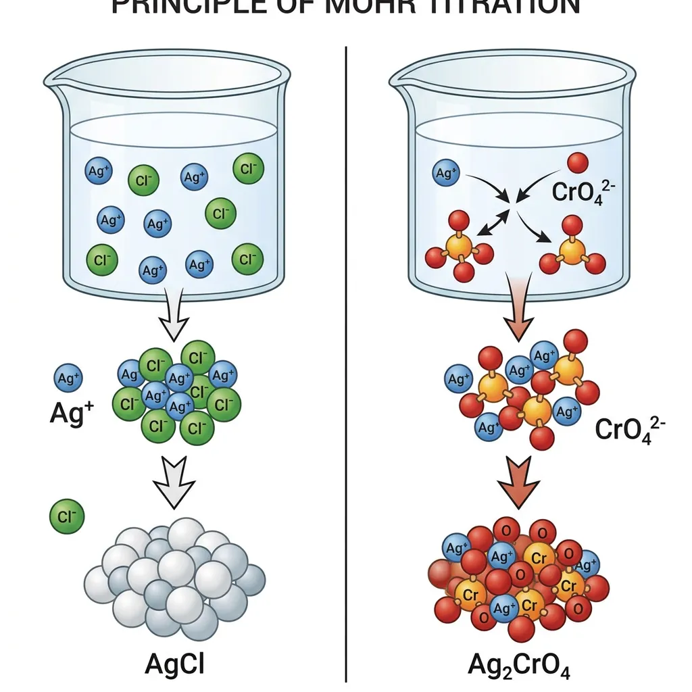
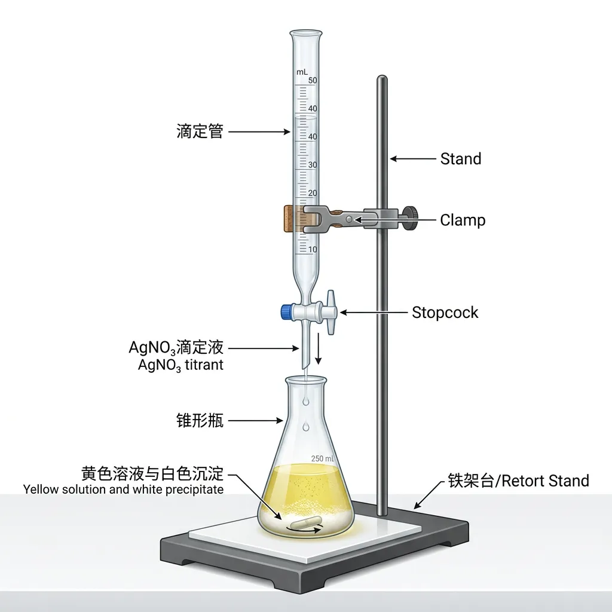
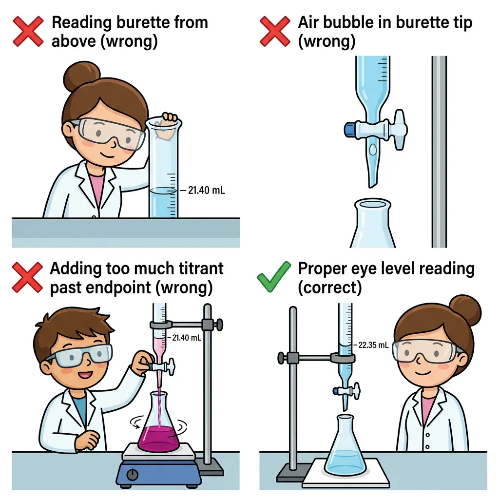

Gallery
v1.0.0 · skill v7.14.1
如何像化学家一样，精确测定一瓶未知溶液中 Cl⁻ 的浓度？
先选一个你关心的问题。后面的例子、提示和 AI 学伴都会围绕这个问题来帮你推进。
选择或输入后，本课会围绕你的问题展开。
And：已知 AgNO₃ 遇 Cl⁻ 产生白色沉淀 AgCl——定性分析。
But：生活需定量答案：生理盐水 NaCl 是否达标？地下水 Cl⁻ 是否超标？"有沉淀"答不了"有多少"。
Therefore：学习标准滴定法——用已知浓度 AgNO₃，像"化学天平"精确测量 Cl⁻ 的量。
先回答 2 个问题，看看你对前置知识的掌握情况。
Q1：NaCl + AgNO₃ 的离子方程式？
Q2：AgCl 的 Ksp ≈ 1.8×10⁻¹⁰ 说明？

AgCl 溶度积极小，反应几乎完全。Cl⁻ 耗尽后，Ag⁺ 与指示剂变色——终点信号。
AgCl 的 Ksp 小于 Ag₂CrO₄。Ag⁺ 先沉淀 Cl⁻（白色），再与 CrO₄²⁻ 生成砖红色沉淀。

规范操作是准确结果的前提。
基准物质配制或已标定 AgNO₃。
蒸馏水洗后，待装液润洗 2-3 次。
取 25.00 mL，加 1-2 mL K₂CrO₄。
左手控活塞，右手摇瓶。近终点逐滴加。
稳定砖红色，30 秒不褪。
视线水平，记录至 0.01 mL。
调整参数，点击"开始滴定"，观察终点判断。体验真实实验中的操作节奏。
0.0500 mol/L AgNO₃ 滴定 25.00 mL NaCl，消耗 20.40 mL。
c(NaCl) = 0.0500×20.40/25.00 = 0.0408 mol/L
| 失误 | V(AgNO₃) | 结果 |
|---|---|---|
| 未润洗 | 偏大 | 偏大 |
| 终点滞后 | 偏大 | 偏大 |
| 俯视读数 | 偏小 | 偏小 |
| 气泡未排 | 偏大 | 偏大 |
这些错误在真实考试中反复出现，提前认识它们，考场上就不会掉坑。

局部变红≠终点。整体稳定砖红色，30秒不褪。
体积用升(L)，mL 乘 10⁻³。
滴定管要润洗，锥形瓶不能润洗。
管要洗，瓶莫洗；终点红，半分稳；换升算，别忘³。
0.100 mol/L AgNO₃ 滴定 20.00 mL NaCl，消耗 16.00 mL。求 c(NaCl)。
水样 50.00 mL，0.0100 mol/L AgNO₃ 三次滴定：12.30、12.45、12.35 mL。求 Cl⁻ 质量浓度(mg/L)。
设计实验：测定含碘酸钾食盐中 NaCl 纯度。有何干扰？如何消除？
Q1：终点砖红色沉淀是什么？
Q2：哪种操作导致结果偏大？
Q3：0.05 mol/L AgNO₃ 滴定 20 mL NaCl，消耗 16 mL。求 c(NaCl)。
若溶液含 Cl⁻ 和 Br⁻，还能准确测 Cl⁻ 吗？（查 AgBr 的 Ksp）
用动画和讲解快速回顾：标准溶液、指示剂、终点判断、数据记录和误差分析。
滴定法是通过已知浓度的标准溶液（滴定剂）与待测物质定量反应，根据消耗体积计算待测物浓度的分析方法。以AgNO₃滴定Cl⁻为例，其核心是银离子与氯离子生成白色AgCl沉淀的定量反应：Ag⁺ + Cl⁻ → AgCl↓。例如测定食盐水中NaCl含量时，每消耗1mL 0.1mol/L AgNO₃溶液即对应3.55mg Cl⁻。关键要控制反应终点——当最后一滴AgNO₃使溶液中出现持久浑浊时，即达到等当点。实验误差需控制在±0.1%以内，这要求滴定管读数精确至0.01mL。
莫尔法采用K₂CrO₄作指示剂，利用Ag₂CrO₄砖红色沉淀的出现判断终点。当Cl⁻几乎完全沉淀后（此时[Ag⁺]≈√Ksp(AgCl)=1.3×10⁻⁵mol/L），微过量的Ag⁺会与CrO₄²⁻生成明显色变的Ag₂CrO₄（Ksp=1.1×10⁻¹²）。例如测定矿泉水氯含量时，需控制pH在6.5-10.5范围：酸性条件下CrO₄²⁻会转化为HCrO₄⁻导致灵敏度下降；碱性过强则可能生成Ag₂O干扰。指示剂浓度通常为5×10⁻³mol/L，过高会提前显色，过低则延迟终点判断。
AgNO₃标准溶液需用基准试剂配制并标定。具体步骤：①将分析纯AgNO₃在110℃烘干2小时去除吸湿水；②用万分之一天平准确称取8.494g溶解定容至500mL得到0.1000mol/L溶液。标定时采用NaCl基准物质：将5.844g特级纯NaCl（预先500℃灼烧）定容至1L，取25.00mL该溶液进行滴定。例如某次标定消耗AgNO₃ 24.87mL，则实际浓度C(AgNO₃)=0.1000×25.00/24.87=0.1005mol/L。注意避光保存防止AgNO₃光解。
规范操作包括：①锥形瓶用去离子水润洗三次；②移液管吸取待测液前需用该溶液润洗2-3次；③滴定初期可快速滴加，接近终点时改为半滴操作。以测定生理盐水（0.9% NaCl）为例：准确移取10.00mL样品，加50mL水和1mL 5% K₂CrO₄，在白色背景下滴定至悬浊液由黄色变为微橙红色并保持30秒不褪。平行测定三次，极差应≤0.04mL。特别注意：滴定过程需持续摇动锥形瓶使局部过浓的Ag⁺及时分散，避免提前生成Ag₂CrO₄造成误差。
空白试验用于消除系统误差：取50mL去离子水加1mL K₂CrO₄，滴定至相同终点颜色。例如某次空白试验消耗0.02mL AgNO₃，则实际样品消耗体积需扣除该值。主要误差来源包括：①指示剂吸附（可通过煮沸后快速冷却消除）；②AgCl沉淀吸附Cl⁻（临近终点时剧烈振荡释放）；③光线引起AgCl分解（用棕色滴定管）。以测定自来水为例，若三次滴定读数分别为12.45、12.49、12.41mL，取平均值12.45mL后需减去空白值，最终按公式ρ(Cl⁻)=C(AgNO₃)×(V-V₀)×35.5/V样品计算浓度。
法扬斯法采用荧光黄等吸附指示剂，利用沉淀表面电荷变化引起颜色突变。以测定工业废水Cl⁻为例：在pH7-10条件下，荧光黄阴离子（Fl⁻）被带正电的AgCl胶粒吸附显粉红色；终点时过量Ag⁺使胶粒电荷反转，指示剂解吸恢复黄色。此法比莫尔法灵敏度高10倍，适合低浓度（10⁻⁵-10⁻³mol/L）测定。操作要点：①加入糊精保护胶体；②避免强光照射；③控制离子强度（如高盐样品需稀释）。与莫尔法对比，法扬斯法能检测0.001%的Cl⁻，但干扰离子更多。
电位滴定法通过测量银电极电位突变确定终点，适用于有色/浑浊样品。以测定酱油中氯化钠为例：将pH计切换至mV档，银电极与参比电极浸入样品，记录滴定过程中电位变化。当ΔE/ΔV出现峰值时即为终点，软件自动计算Cl⁻含量。该方法优势：①不受样品颜色干扰（如测定红酒）；②可识别多终点（如Cl⁻、Br⁻、I⁻混合溶液）；③精度达±0.5mV对应±0.1%误差。现代自动电位滴定仪还可实现：①动态等当点预测；②脉冲式加液减少过滴；③数据实时上传云端分析。
实际应用包括：①食品检测（GB 5009.44规定食盐中Cl⁻测定必须用AgNO₃滴定法）；②环境监测（地表水氯离子含量反映污染程度）；③医药制剂（注射用氯化钠需控制Cl⁻含量在99.0-100.5%）。典型案例：检测游泳池水时，取100mL水样加1mL HNO₃酸化，若消耗3.6mL 0.0141mol/L AgNO₃，则Cl⁻浓度=0.0141×3.6×35.45×1000/100=18mg/L，符合国标（＜200mg/L）。注意：含溴、碘样品需先煮沸除去干扰；含CN⁻样品应改用Hg(NO₃)₂滴定法避免生成剧毒AgCN。
1. 为什么AgNO₃溶液要用棕色瓶保存？2. 若滴定终点时溶液呈深红色，可能是什么原因导致的？3. 法扬斯法与莫尔法在指示原理上有何本质区别？
1. 用0.1020mol/L AgNO₃滴定25.00mL NaCl溶液消耗22.40mL，求Cl⁻含量(mg/L)。2. 莫尔法测定时溶液pH为何不能低于6.5？3. 空白试验中若消耗0.05mL AgNO₃，对12.30mL的样品测定值应如何校正？
常见错因：①误将Ag₂CrO₄红色沉淀当作反应物（实为终点指示信号）；②误区认为所有卤素离子可用同法测定（实际I⁻会吸附更强需特殊处理）；诊断方案：通过对比实验展示Br⁻、I⁻滴定曲线的差异，用动画演示胶体表面电荷变化过程。
迁移挑战：设计一个探究实验——如何用AgNO₃滴定法测定海水中Cl⁻含量？需考虑：①高盐基质干扰的消除方法；②如何验证海洋生物有机物是否影响终点判断；③对比国标HJ 84-2016的电位滴定法数据差异分析。
先独立作答，再点选项查看对错与错因。
在AgNO₃滴定Cl⁻的过程中，下列哪个现象表明滴定到达终点？
使用0.1 mol/L AgNO₃溶液滴定10 mL自来水样品，消耗AgNO₃溶液12 mL。则该自来水样品中Cl⁻浓度为多少mol/L？
在AgNO₃滴定Cl⁻实验中，下列操作正确的是？
在AgNO₃滴定Cl⁻实验中，指示剂通常选用____溶液。
答案：K₂CrO₄
K₂CrO₄作为指示剂，在Cl⁻完全反应后与Ag⁺生成砖红色沉淀，指示滴定终点
若AgNO₃溶液浓度为0.05 mol/L，滴定20 mL水样消耗8 mL AgNO₃溶液，则水样中Cl⁻浓度为____ mol/L。
答案：0.02
c(Cl⁻) = c(AgNO₃) × V(AgNO₃) / V(水样) = 0.05 × 8 / 20 = 0.02 mol/L
关于AgNO₃滴定Cl⁻实验，下列说法正确的是？
采集自来水、雨水、矿泉水三种水样，分别用AgNO₃滴定法测定Cl⁻浓度